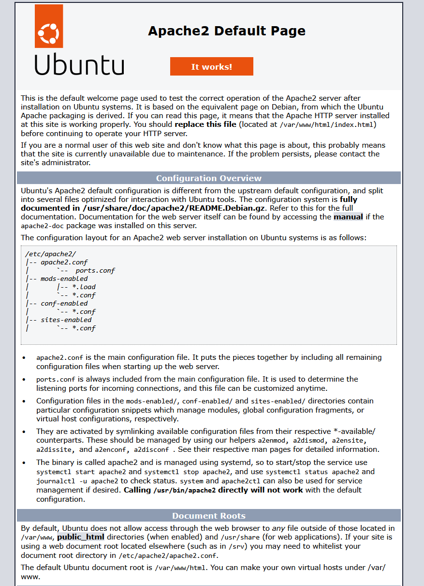
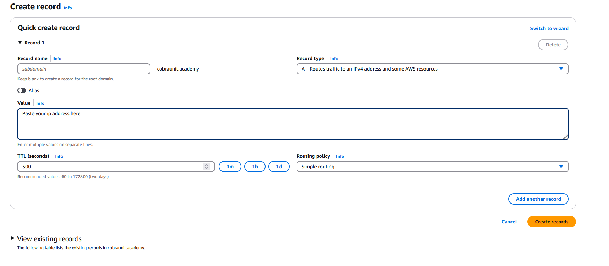
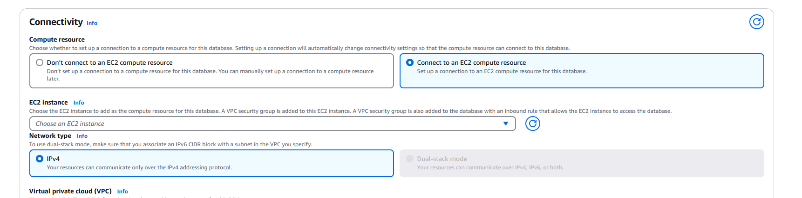

When setting up a powerful platform like BuddyBoss, using shared hosting is one of the most common mistakes people make. Shared hosting environments are often limited in memory, processing power, and PHP configuration options—none of which align well with BuddyBoss's demands. Because BuddyBoss powers dynamic communities, membership platforms, and real-time interactions, it requires dedicated resources and greater control over your server.
Shared servers like Kinsta, Cloudways, and WP Engine won't cut it when it comes to using BuddyBoss - and WP Engine doesn't even allow you to configure you php.ini settings - a crucial step of a performant and fast WordPress site.
By using AWS EC2 with RDS and SSL, you ensure your site has the performance, security, and scalability it needs to thrive.
1. Launch an EC2 Instance
- Login to the AWS console and navigate to the EC2 dashboard.
- Create a new instance and select Ubuntu as the OS.
- Important: Choose
t2.smallinstead oft2.microto prevent crashes while navigating the dashboard. - Create a
.pemkey file for SSH access. Store it in an accessible folder on your local machine. - Allow SSH, HTTP, and HTTPS traffic. These settings can be updated later in your security group.
- Optionally increase the storage to 30 GB.
- Click "Launch Instance" and proceed to the next step after your instance is running.
2. Add Your SSH Key
We'll need to set your SSH key on the EC2 instance before connecting locally:
- Ensure your PEM file is saved where you intend to SSH from (e.g.,
./aws/keypairsin WSL). - If you haven't already, generate a public SSH key and save it to
~/.ssh/id_rsa.pub. - Use the EC2 "Connect" feature to access the built-in AWS shell.
Paste your local SSH public key on a new line after the existing one. Save and exit.
You can now SSH into your EC2 instance from your local machine using the command shown under the "SSH client" tab on the EC2 dashboard.
3. Update Your Server
4. Install Apache
5. Install PHP & Extensions
7. Verify PHP
Check for your php.ini file and confirm your PHP version to ensure everything is properly installed.
Configure PHP for BuddyBoss & Install WordPress
BuddyBoss requires increased PHP settings to function properly. You can manually update your php.ini file, or use the following commands to update them automatically via sed.
First, confirm your PHP version. Then update the values using this snippet:
Download and Set Up WordPress
Ensure both ubuntu and www-data users have appropriate ownership to avoid permission issues.
Set Up Your Domain in Route 53
- You can point your domain's DNS from services like GoDaddy to Route53.
- For simplicity, buy the domain directly in Route53.
- If the domain is from a third-party provider, follow their guide to connect it to Route53.
Before proceeding, verify your EC2 server is working by copying its public IP into your browser. You should see the default Apache page.
Next, in Route53:
- Set up a Hosted Zone for your domain.
- Create two A records: one for
yourdomain.comand another forwww.yourdomain.com, both pointing to your EC2 IP.
Set Up RDS
- Create a MariaDB instance using the free tier.
- Connect it to your EC2 instance.
- Choose a secure username and password—avoid defaults like
root. - Set an initial database name under Additional Configuration.
Once created, use the RDS endpoint as your DB_HOST in wp-config.php. Use the credentials and DB name you set up.
Generate your WordPress salts with:
Set Up Virtual Host & SSL
Here's a virtual host config for your domain (replace placeholders with your actual domain):
Reload Apache:
Install Certbot & Get SSL Certificate
Request a certificate for your domain and its www version:
At this point, your server, database, domain, and SSL should all be configured and ready. You can now open your browser, navigate to your domain, and you'll be greeted by the WordPress installation screen. From here, you can complete the setup, create your admin account, and begin building your BuddyBoss-powered site with confidence and full control over your infrastructure.